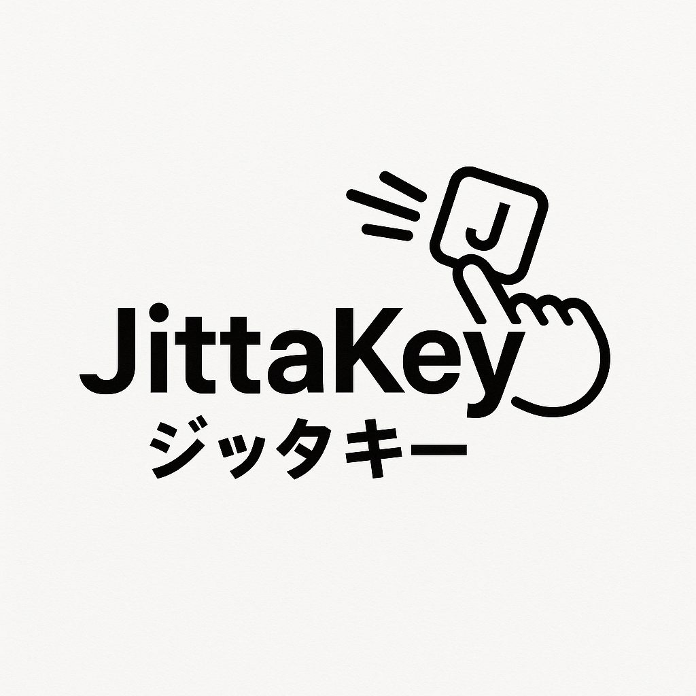

JittaKeyへようこそ
日本語入力をより簡単かつ高速にする革新的な方法です。

🔑 主な特徴
- ローマ字入力と比較して約20%の打鍵数を削減
- WYSIWYG方式 – 見たままをそのまま入力
- 頻出文字の1打鍵入力（例：い段、小さい母音、っ、ん、ゃ、ゅ、ょなど）
- 使用されないキーに連想法による割り当て（例：Q = ん、F = を、J = ゆなど）
- アプリとカスタムキーボード両方に対応
🧠 Mnemonic Mapping for Unused Keys
- Q → 「ん」: Queueingの“Q”から“ing”＝「ん」を連想
- F → 「を」: カタカナの「ヲ」とFの形が似ている（デカルコマニー）
- J → 「ゆ」: 柔道（Juudou）の“ゆ”音
- L → 「よ」: YOLOに含まれる「よ」とL
- X → 「―」: X-mas（クリスマス）からハイフンを連想
- C → 「っ」: “CHU”などの語感から「っ」を連想
- V → 「ヴ」: 英語の“V”と発音が同じ
📱 iPhone デモ:
📱 iPad デモ:
ℹ️ 特別な入力ルール
「きょ」は、キーレイアウトに示された通り、き + ょ で入力できます。
「きあ」を正確に入力するには、kia と入力してください（ka では「か」と認識されます）。このルールは、kii = きい、kiu = きう、kie = きえ、kio = きお にも適用されます。